2025-10-13
🔍 I Forgot
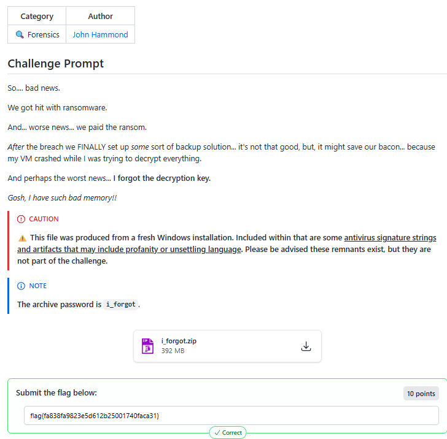
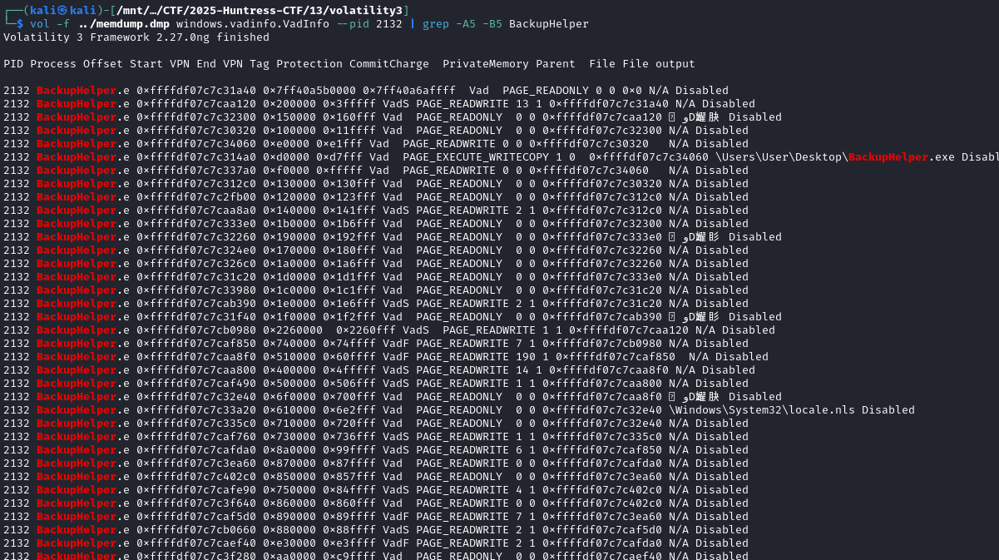
Okay, well, foremost did exract the zip with the 2 files we needed. But you could also use a script. We did a view queries to find pk files.
import re, hashlib
data = open("memdump.dmp", "rb").read()
starts = [m.start() for m in re.finditer(b'PK\x03\x04', data)]
ends = [m.start() for m in re.finditer(b'PK\x05\x06', data)]
for s in starts:
e = next((x for x in ends if x > s), None)
if not e: continue
chunk = data[s:e+22]
h = hashlib.sha256(chunk).hexdigest()
if h == "d1f9bd7084f5234400f878971fa7ccba835564845f0b10479efd5c38bd184f09":
open("DECRYPT_PRIVATE_KEY.zip", "wb").write(chunk)
print(f"✅ Found at offset {s} - saved DECRYPT_PRIVATE_KEY.zip")
break
find the password for the zip in the logs
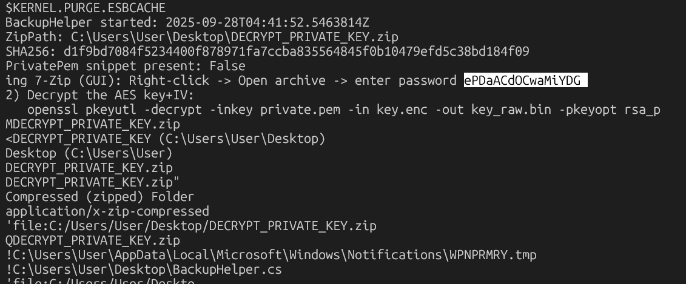
pid 2312 was fo the backuphelper.exe
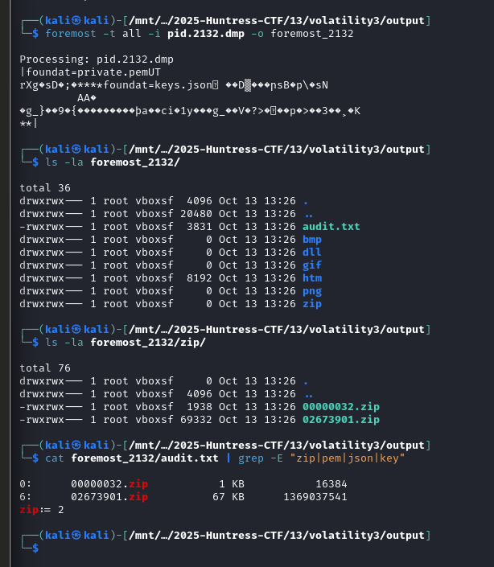
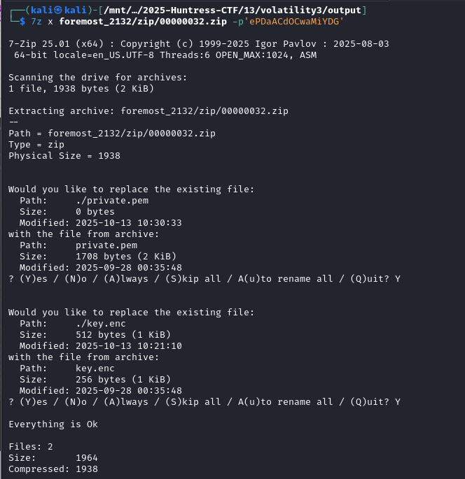
We need the
1 flag.enc from the zip
2 key.enc from the memdump.dmp
3 private.pem from the memdump.dmp
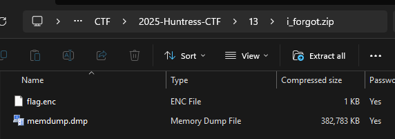
A little llm help shows us about the key file and using the private file to back into it
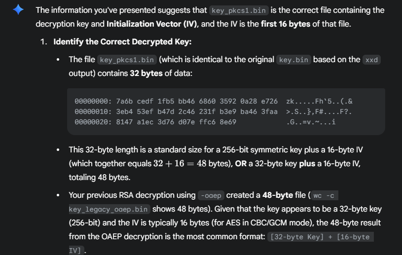
openssl pkeyutl -decrypt -inkey private.pem -passin pass:ePDaACdOCwaMiYDG \
-in key.enc -out key.bin -pkeyopt rsa_padding_mode:oaep || \
openssl pkeyutl -decrypt -inkey private.pem -passin pass:ePDaACdOCwaMiYDG \
in key.enc -out key.bin -pkeyopt rsa_padding_mode:pkcs1
KEYIV=$(xxd -p key.bin| tr -d '\n')
KEY=${KEYIV:0:64}
IV=${KEYIV:64:32}
tail -c +17 flag.enc > flag.data
openssl enc -d -aes-256-cbc -K $KEY -iv $IV -in flag.data -out flag.txt
the openssl output gets to this
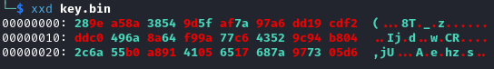
then you use the first 64 for key, and last 32 for iv
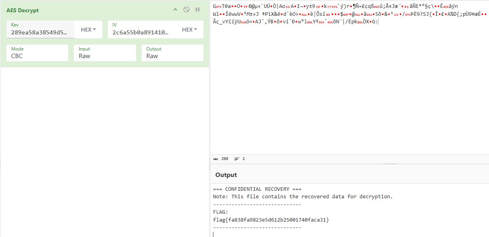
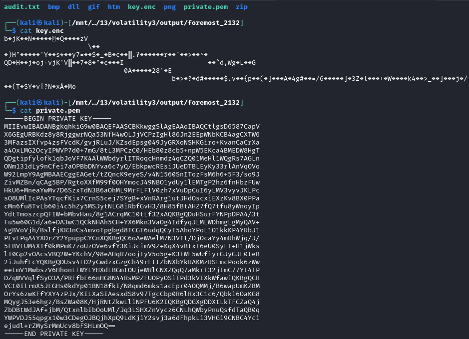
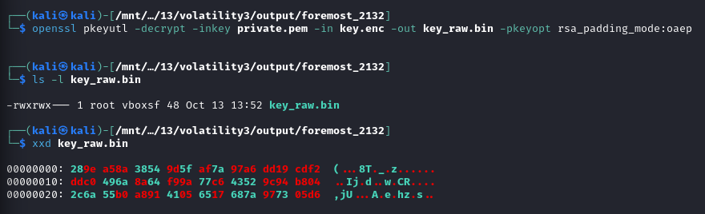
flag{fa838fa9823e5d612b25001740faca31}
{kind=link}
{kind=link}
{kind=link}
{kind=link}
{kind=link}
{kind=link}
{kind=link}
{kind=link}
{kind=link}
{kind=link}
{kind=link}